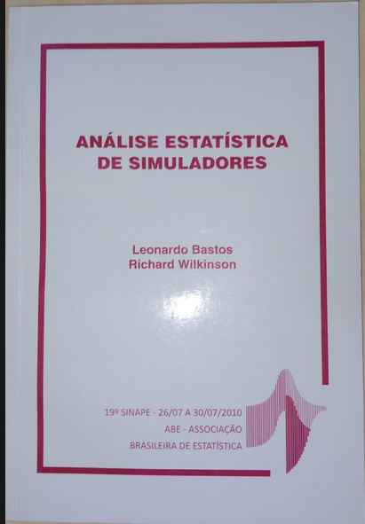

Publications
Papers (full list)
- Lattes CV: lattes.cnpq.br/5241799121437269 (Also available in English)
Book
BASTOS, LEONARDO S.; WILKINSON, R. D. . Análise Estatística de Simuladores. São Paulo: Associação Brasileira de Estatística, 2010. 91p . PDF

Book chapters
Silva, João Flávio Andrade ; IZBICKI, RAFAEL ; BASTOS, LEONARDO S. ; Soares, Guilherme P. . Monitoring Viral Infections in Severe Acute Respiratory Syndrome Patients in Brazil. Contributions to Statistics. 1ed.: Springer Nature Switzerland, 2024, v. , p. 75-80.
Gamerman, Dani ; MAYRINK, V. D. ; BASTOS, LEONARDO S. . Pandemic Data. In: Dani Gamerman; Marcos O. Prates; Thaís Paiva; Vinícius D. Mayrink. (Org.). Building a Platform for Data-Driven Pandemic Prediction From Data Modelling to Visualisation - The CovidLP Project. 1ed.Oxon: Chapman and Hall/CRC, 2022, v. , p. 17-30.
BASTOS, LEONARDO S.; Carvalho, Luiz Max ; GOMES, MARCELO F. C. . Modelling misreported data. In: Dani Gamerman; Marcos O. Prates; Thaís Paiva; Vinícius D. Mayrink. (Org.). Building a Platform for Data-Driven Pandemic Prediction From Data Modelling to Visualisation - The CovidLP Project. 1ed.Oxon: Chapman and Hall/CRC, 2022, v. , p. 113-140.
PONTES, A. L. M. ; CARDOSO, A. M. ; BASTOS, LEONARDO S. ; SANTOS, R. V. . Pandemia de Covid-19 e os Povos Indígenas no Brasil: cenários sociopolíticos e epidemiológicos. In: MATTA, G.C., REGO, S., SOUTO, E.P., and SEGATA, J.. (Org.). Os impactos sociais da Covid-19 no Brasil: populações vulnerabilizadas e respostas à pandemia. 1ed.Rio de Janeiro: Editora Fiocruz, 2021, v. , p. 123-.
CODEÇO, C. T. ; VILLELA, DANIEL A. M. ; COELHO, FLAVIO CODEÇO ; BASTOS, LEONARDO S. ; Carvalho, Luiz Max ; GOMES, MARCELO F. C. ; CRUZ, OSWALDO G ; LANA, RAQUEL M. . Estimativa de risco de espalhamento da Covid-19 no Brasil e avaliação da vulnerabilidade socioeconômica nas microrregiões brasileiras. In: FREITAS, C. M.; BARCELLOS, C.; VILLELA, D. A. M.,. (Org.). Covid-19 no Brasil: cenários epidemiológicos e vigilância em saúde. 1aed.Rio de Janeiro: Editora Fiocruz, 2021, v. , p. 75-84.
LANA, RAQUEL M. ; CODEÇO, C. T. ; SANTOS, R. V. ; CUNHA, B. ; COELHO, FLAVIO C ; CRUZ, OSWALDO G ; CALDAS, A. D. R. ; SOUZA, M. C. ; BASTOS, LEONARDO S. ; PONTES, A. L. M. ; GOMES, MARCELO F. C. ; TAVARES, I. N. ; DAL?ASTA, A. P. ; RORATO, A. C. ; ESCADA, M. I. S. ; Carvalho, Luiz Max ; VILLELA, DANIEL A. M. ; DAMASCO, F. S. ; CARDOSO, A. M. . Vulnerabilidade das populações indígenas à pandemia de COVID-19 no Brasil e os desafios para o seu monitoramento. In: FREITAS, C. M.; BARCELLOS, C.; VILLELA, D. A. M.,. (Org.). Covid-19 no Brasil: cenários epidemiológicos e vigilância em saúde. 1aed.Rio de Janeiro: Editora Fiocruz, 2021, v. , p. 127-142.
CORTES, J. J. C. ; ALBUQUERQUE, B. C. ; HERKRATH, F. J. ; NAVECA, F. G. ; LUZ, S. L. B. ; LIMA, R. T. S. ; GOMES, MARCELO F. C. ; VILLELA, DANIEL A. M. ; BARCELLOS, CHRISTOVAM ; FREITAS, C. M. ; BASTOS, LEONARDO S. ; PORTELA, M. C. ; FERNANDES, V. R. . Pandemia pelo SARS-CoV-2 no estado do Amazonas. In: FREITAS, C. M.; BARCELLOS, C.; VILLELA, D. A. M.,. (Org.). Covid-19 no Brasil: cenários epidemiológicos e vigilância em saúde. 1aed.Rio de Janeiro: Editora Fiocruz, 2021, v. , p. 143-158.
Carvalho, Luiz Max ; Struchiner, Claudio J. ; BASTOS, LEONARDO S. . Bayesian Inference of Deterministic Population Growth Models. In: Polpo de Campos, A.; Neto, F.L.; Ramos Rifo, L.; Stern, J.M., Lauretto, M.. (Org.). Interdisciplinary Bayesian Statistics: EBEB 2014. 1ed.: Springer International Publishing, 2015, v. 168, p. 217-228.
Packages

Pre-prints
Freitas, Laís Picinini et al. (2025) A statistical model for forecasting probabilistic epidemic bands for dengue cases in Brazil medrxiv
Rauth, Caio S. et al. Assessing mosquito dynamics and dengue transmission in Foz do Iguaçu, Brazil through an enhanced temperature-dependent mathematical model medrxiv
Koemen, Silas et al. (2025) Fast and Trustworthy Nowcasting of Dengue Fever: A Case Study Using Attention-Based Probabilistic Neural Networks in São Paulo, Brazil medrxiv
Araújo, Eduardo Correa (2025) Leveraging probabilistic forecasts for dengue preparedness and control: the 2024 Dengue Forecasting Sprint in Brazil medrxiv
Lopez Velma K. et al. (2024) A roadmap to account for reporting delays for public health situational awareness – a case study with COVID-19 and dengue in United States jurisdictions medrxiv
Xiao, Yang et al. (2024) Dengue nowcasting in Brazil by combining official surveillance data and Google Trends information medrxiv
Skarstein, Emma et al. (2024) Bayesian models for missing and misclassified variables using integrated nested Laplace approximations. arxiv
Araújo, Eduardo et al. (2024) Large-scale Epidemiological modeling: Scanning for Mosquito-Borne Diseases Spatio-temporal Patterns in Brazil. arxiv
Ganem, Fabiana et al. (2024) Mosqlimate: a platform to providing automatable access to data and forecasting models for arbovirus disease. arxiv
Moreira, Rodrigo et al (2023) Persistent high mortality rates for Diabetes Mellitus and Hypertension after excluding deaths associated with COVID-19 in Brazil, 2020-2022 medrxiv
Sperandei, Sandro et al. (2021) Evaluation of Logistic Regression Applied to Respondent-Driven Samples: Simulated and Real Data arxiv
Mizzi, Giovanni et al. (2021) Faster indicators of dengue fever case counts using Google and Twitter arxiv
Ferreira, Leonardo Souto et al. (2021) Estimating the impact of implementation and timing of the COVID-19 vaccination programme in Brazil: a counterfactual analysis medrxiv
Brizzi, Andrea et al. (2021) Report 46: Factors driving extensive spatial and temporal fluctuations in COVID-19 fatality rates in Brazilian hospitals medrxiv
Villela, Daniel A.M. et al. (2021) Effectiveness of Mass Vaccination in Brazil against Severe COVID-19 Cases medrxiv
Ayala, Mario J.C. et al. (2021) On multifactorial drivers for malaria rebound in Brazil: a spatio-temporal analysis medrxiv
Coelho, Flávio Codeço et al. (2020) Modeling the Post-Containment Elimination of Transmission of COVID-19 medrxiv
Colón-González, Felipe J. et al. (2020) Probabilistic seasonal dengue forecasting in Vietnam using superensembles medrxiv
Coelho, Flávio Codeço et al. (2020) Assessing the potential impact of COVID-19 in Brazil: Mobility, Morbidity and the burden on the Health Care System medrxiv
Brady, Oliver et al. (2020) The potential cost-effectiveness of controlling dengue in Indonesia using wMel Wolbachia released at scale: a modelling study medrxiv
Bastos, Leonardo S. et al (2018) Fast approaches for Bayesian estimation of size of hard-to-reach populations using Network Scale-up arxiv
Gonçalves, Kelly et al. (2018) Dynamic quantile linear models: a Bayesian approach arxiv
Bastos, Leonardo S. (2017) Modelling reporting delays for disease surveillance data arxiv
Coelho, Flávio Codeço et al. (2016) Sexual transmission causes a marked increase in the incidence of Zika in women in Rio de Janeiro, Brazil. Biorxiv
Codeço, Claudia Torres et al. (2016) InfoDengue: a nowcasting system for the surveillance of dengue fever transmission. Biorxiv
Carvalho, Luiz Max et al. (2015) Combining probability distributions: Extending the logarithmic pooling approach arxiv
Bastos, Leonardo S. et al. (2014) Obtaining adjusted prevalence ratios from logistic regression model in cross-sectional studies arxiv
Bastos et al. (2012) Binary regression analysis with network structure of respondent-driven sampling data. arxiv